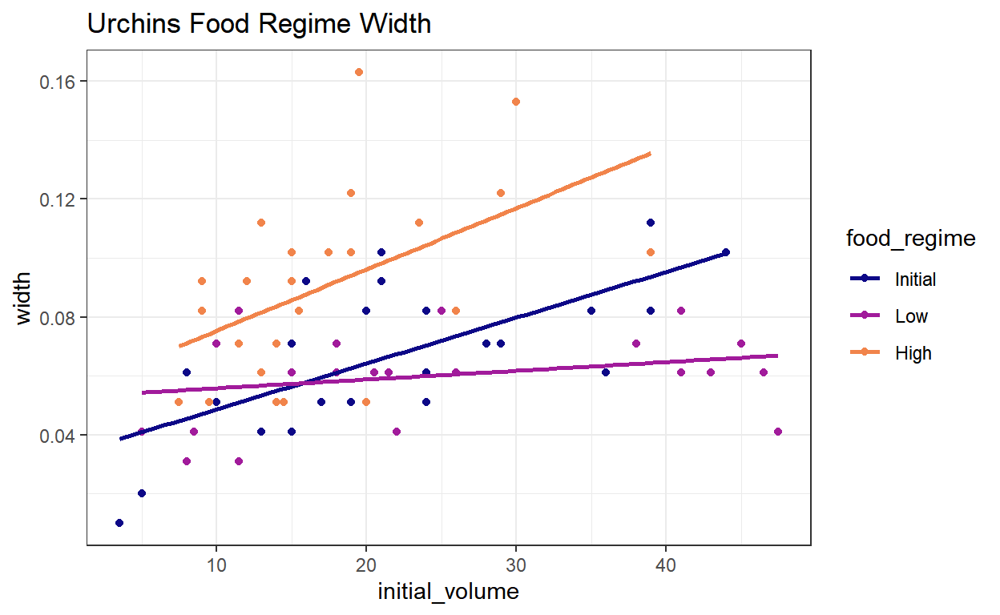
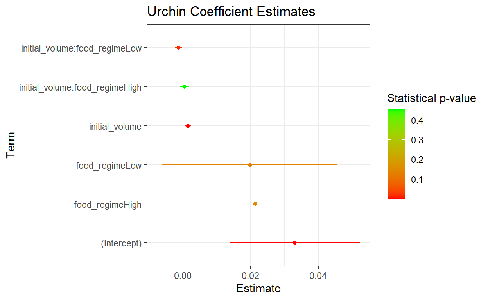
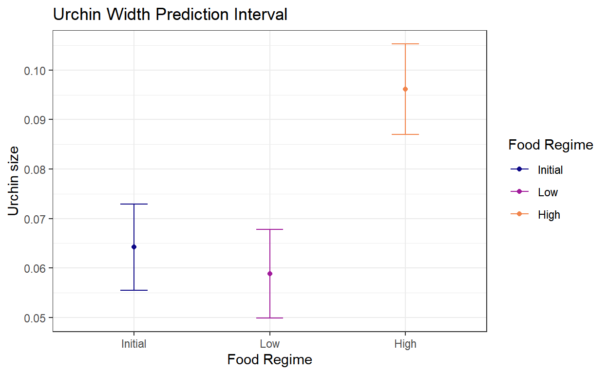
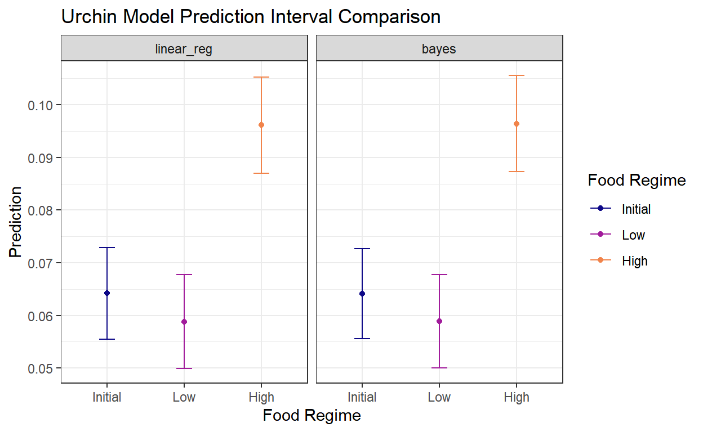
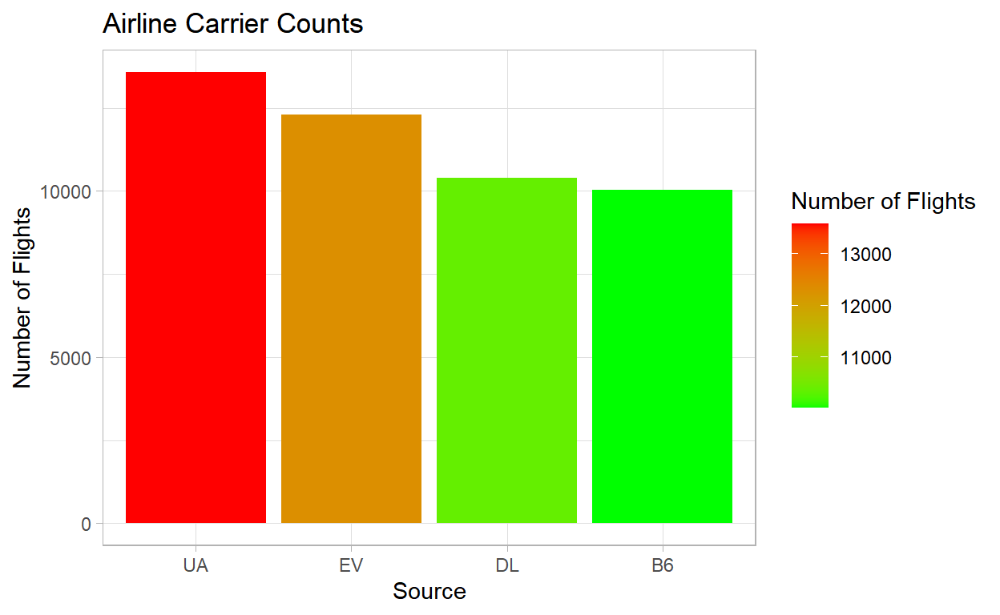
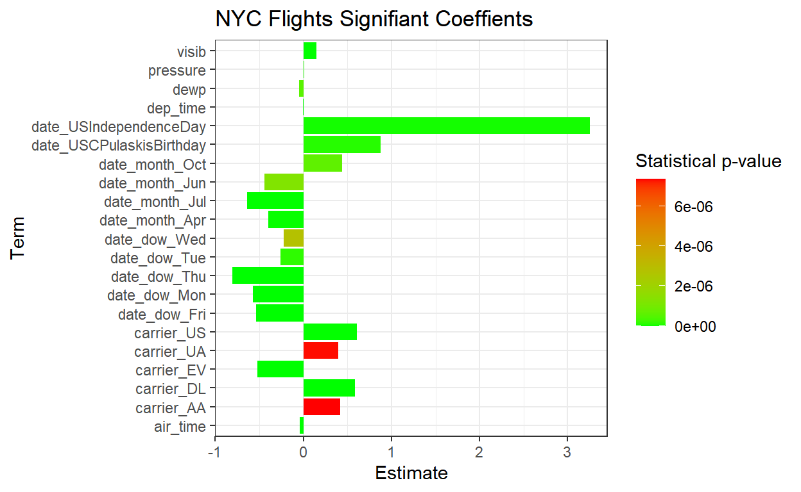
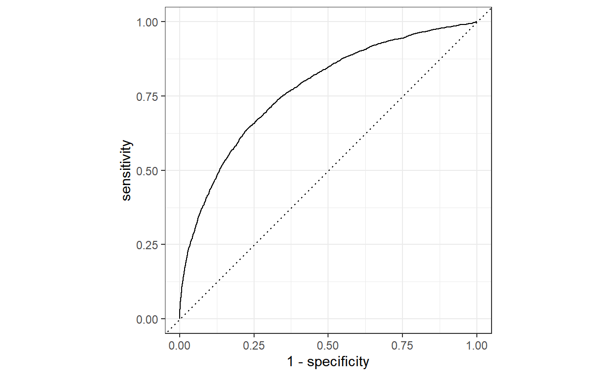
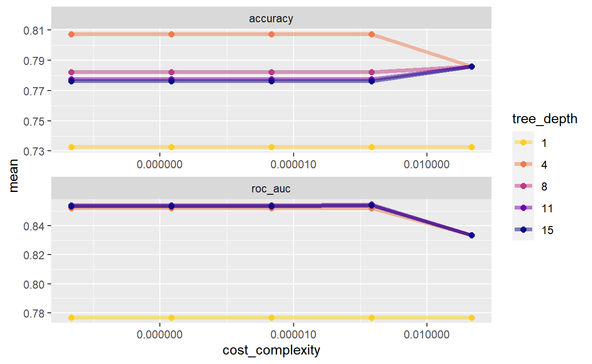
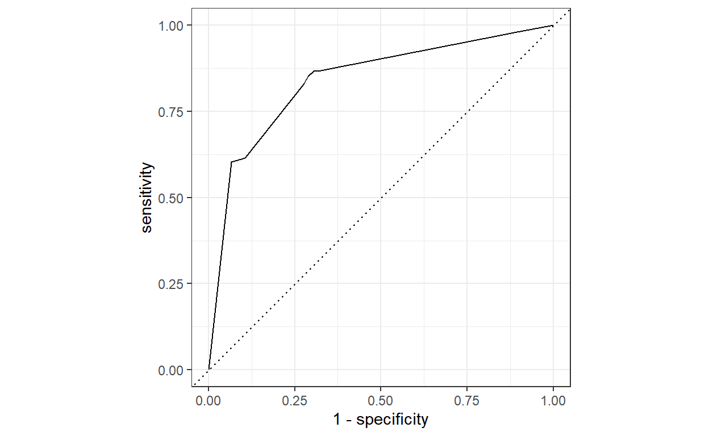
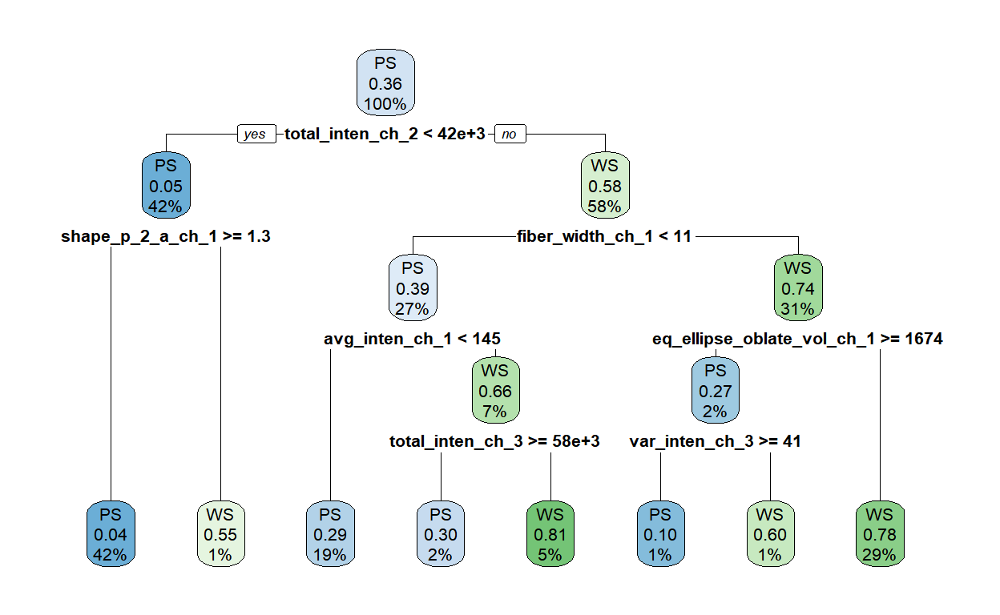

This post is an introduction to using Tidymodels in R.
Tidymodels is a relatively new R package that integrates data
processing, cleaning, and modeling into a single workflow. Tidymodels
also solves the notorious problem of multiple R interfaces to different
statistical models that one might want to develop (e.g.,
rpart for decision tree, glm for logistic
regression, or randomForest for a random forest). Each with
redudanct and duplicative parameters with multiple meanings and uses,
tidymodels unifies the modeling process.
The tidy models site contains many of the code snippets found here. Also the tidy models book provides a great more deal of information using the package.
Let’s get started!
library(tidymodels) # for the parsnip package, along with the rest of tidymodels
# Helper packages
library(readr) # for importing data
library(broom.mixed) # for converting bayesian models to tidy tibbles
library(dotwhisker) # for visualizing regression resultsThe urchins dataset has three columns:
This dataset is used just to illustrate the capability that
tidymodels offers for model building and using
recipes to construct a data pipeline.
urchins <- read_csv("https://tidymodels.org/start/models/urchins.csv") %>%
setNames(c("food_regime", "initial_volume", "width")) %>%
dplyr::mutate(food_regime = factor(food_regime, levels = c("Initial", "Low", "High")))
urchins# A tibble: 72 x 3
food_regime initial_volume width
<fct> <dbl> <dbl>
1 Initial 3.5 0.01
2 Initial 5 0.02
3 Initial 8 0.061
4 Initial 10 0.051
5 Initial 13 0.041
6 Initial 13 0.061
7 Initial 15 0.041
8 Initial 15 0.071
9 Initial 16 0.092
10 Initial 17 0.051
# ... with 62 more rows
# i Use `print(n = ...)` to see more rowsBelow is a quick visual of the dataset with some trends within the
group=food_regime.
ggplot(urchins,
aes(x= initial_volume,
y= width,
group = food_regime,
col = food_regime)) +
geom_point() +
geom_smooth(method = lm, formula = "y~x", se = FALSE) +
scale_color_viridis_d(option = "plasma", end = 0.7) +
theme_bw() +
ggtitle("Urchins Food Regime Width")
the parsnip package comes along with
tidymodels and this contains a bunch of unified interfaces
to models we know and love. Linear regression being
linear_reg(). As usual, create the model, fit with a
formula, then predict on new data. The tidy function is a
dominant feature to this package. It trumps the historic
summary and coef from the fit model object by
outputting a clean table with estimates, errors, and p-values.
lm_mod = parsnip::linear_reg()
lm_fit = lm_mod %>%
fit(width ~ initial_volume * food_regime, data = urchins)
broom.mixed::tidy(lm_fit)# A tibble: 6 x 5
term estimate std.error statistic p.value
<chr> <dbl> <dbl> <dbl> <dbl>
1 (Intercept) 0.0331 0.00962 3.44 1.00e-3
2 initial_volume 0.00155 0.000398 3.91 2.22e-4
3 food_regimeLow 0.0198 0.0130 1.52 1.33e-1
4 food_regimeHigh 0.0214 0.0145 1.47 1.45e-1
5 initial_volume:food_regimeLow -0.00126 0.000510 -2.47 1.62e-2
6 initial_volume:food_regimeHigh 0.000525 0.000702 0.748 4.57e-1One can easily construct upper and lower confidence limits by
+- std.error and view the ranges on the population (if the
model assumptions are validated, i.e., errors normally distributed).
tidy(lm_fit) %>%
mutate(estimate_lower = estimate - 2*std.error,
estimate_upper = estimate + 2*std.error) %>%
ggplot(., aes(x = estimate, y = term, color = p.value)) +
scale_colour_gradient(low = "red", high = "green") +
geom_point() +
geom_linerange(aes(xmin = estimate_lower, xmax=estimate_upper)) +
geom_vline(xintercept = 0, colour = "grey50", linetype = "dashed") +
labs(color = "Statistical p-value", x = "Estimate", y = "Term") +
ggtitle("Urchin Coefficient Estimates") +
theme_bw()
Predicting new points is super easy too. Simply construct a dataframe
with the same columns as your trained data. For us it was
initial_volume which was numeric and
food_regime which was a factor with three levels. So we
want to ultimately predict on volume = 20, but we will
expand.grid that for each level supplied. The output of
expand.grid is always the product of each list supplied
(e.g.,
A = c(a1,a2,a3), B=c(b1,b2,b3,b4) will be |A|*|B|=3*4= 12 rows,
containing every possible tupple combination). In general this is,
\[ rows =\prod_{j=1}^{k}{|S_{j}|} \]
new_points = expand.grid(initial_volume= c(20),
food_regime = c("Initial", "Low", "High"))
new_points initial_volume food_regime
1 20 Initial
2 20 Low
3 20 HighPredictions are made using a standard interface.
mean_pred = predict(lm_fit, new_data = new_points)
mean_pred# A tibble: 3 x 1
.pred
<dbl>
1 0.0642
2 0.0588
3 0.0961Confidence intervals are a type option, which is nice
for getting the above values without the computation.
conf_int_pred = predict(lm_fit,
new_data = new_points,
type = "conf_int")
conf_int_pred# A tibble: 3 x 2
.pred_lower .pred_upper
<dbl> <dbl>
1 0.0555 0.0729
2 0.0499 0.0678
3 0.0870 0.105 Error plots on prediction intervals are now made pretty easy.
# Combine
plot_data = new_points %>%
dplyr::bind_cols(mean_pred) %>%
dplyr::bind_cols(conf_int_pred)
# and plot:
ggplot(plot_data, aes(x=food_regime, col = food_regime)) +
scale_color_viridis_d(option = "plasma", end = 0.7) + # for discrete color option
geom_point(aes(y = .pred)) +
geom_errorbar(aes(ymin = .pred_lower,
ymax = .pred_upper),
width = 0.2) +
labs(y="Urchin size", x = "Food Regime", col = "Food Regime") +
theme_bw() +
ggtitle("Urchin Width Prediction Interval")
Now we can fit a bayesian model to this and see how the differences compare.
prior_dist <- rstanarm::student_t(df = 1)
set.seed(123)
# make the parsnip model
bayes_mod <-
linear_reg() %>%
set_engine("stan",
prior_intercept = prior_dist,
prior = prior_dist)
# train the model
bayes_fit <- bayes_mod %>%
fit(width ~ initial_volume * food_regime, data = urchins)
print(bayes_fit, digits = 5)parsnip model object
stan_glm
family: gaussian [identity]
formula: width ~ initial_volume * food_regime
observations: 72
predictors: 6
------
Median MAD_SD
(Intercept) 0.03310 0.00943
initial_volume 0.00155 0.00040
food_regimeLow 0.01989 0.01326
food_regimeHigh 0.02159 0.01406
initial_volume:food_regimeLow -0.00126 0.00050
initial_volume:food_regimeHigh 0.00053 0.00070
Auxiliary parameter(s):
Median MAD_SD
sigma 0.02120 0.00184
------
* For help interpreting the printed output see ?print.stanreg
* For info on the priors used see ?prior_summary.stanregtidy(bayes_fit, conf.int = TRUE)# A tibble: 6 x 5
term estimate std.error conf.low conf.h~1
<chr> <dbl> <dbl> <dbl> <dbl>
1 (Intercept) 0.0331 0.00943 1.70e-2 4.93e-2
2 initial_volume 0.00155 0.000405 8.91e-4 2.21e-3
3 food_regimeLow 0.0199 0.0133 -2.62e-4 4.15e-2
4 food_regimeHigh 0.0216 0.0141 -2.59e-3 4.61e-2
5 initial_volume:food_regimeLow -0.00126 0.000503 -2.11e-3 -4.41e-4
6 initial_volume:food_regimeHigh 0.000533 0.000700 -6.85e-4 1.67e-3
# ... with abbreviated variable name 1: conf.highbayes_plot_data <-
new_points %>%
bind_cols(predict(bayes_fit, new_data = new_points)) %>%
bind_cols(predict(bayes_fit, new_data = new_points, type = "conf_int")) %>%
mutate(model = "bayes")
plot_data <- plot_data %>%
mutate(model = "linear_reg")
new_plot_data <- bind_rows(plot_data, bayes_plot_data) %>%
mutate(model = factor(model, levels = c("linear_reg", "bayes")))
ggplot(data = new_plot_data, aes(x=food_regime, group=model, col=food_regime)) +
geom_point(aes( y = .pred)) +
geom_errorbar(aes(ymin = .pred_lower,
ymax = .pred_upper),
width = 0.2) +
facet_grid(cols = vars(model)) +
scale_colour_viridis_d(option = "plasma", end = 0.7) +
labs(col = "Food Regime", x = "Food Regime", y = "Prediction") +
ggtitle("Urchin Model Prediction Interval Comparison") +
theme_bw()
So far we’ve learned some pretty handy tricks from the tidymodels
package. There is a unified interface for models and we explored the
linear_reg() one today. This was as simple as fitting and
predicting. We even explored putting in new data and getting predictions
using the expand.grid function. A simple linar model
comparison was done also to see how different models can be brought
together using the dplyr package. The
type = "conf_int" option from the tidymodel interface
provided a .pred_lower and .pred_upper output,
which was helpful to surround the estimate with error bars. Lastly, the
tidy function was new and can be used in place of the
existing summary option that most go to with the unweildy
interface of getting information (i.e., using the coef
function).
The NYC Flights data contains two data tables.
The flights table contain information about
source, destination, time,
carrier and other useful aircraft related information. The
important thing to note about this dataset is that it is not
time series even though there is date time attributes
attributes. This threw me off at first. Each row is a flight. The goal
is to see if we can predict if a flight is late. We will define late as
follows,
\[ late=delay\ge30\:mins \] On time as,
\[
on \: time =delay < 30 \: mins
\] The weather table contains a key which can be
joined against to augment the flight information. This time stamp column
will allow the flight to be observed with other, possibly useful,
attributes such as temperature, windspeed, and others. One very
impressive augmentation for dates (YYYY-MM-DD specifically) is the
package timeDate::listHolidays("US"), which will create
indicators for over 19 holidays and light them up with a 1
or 0 if it is found in the record. Pretty nifty to have in
the tool kit.
Let’s get moving!
flights %>% glimpseRows: 336,776
Columns: 19
$ year <int> 2013, 2013, 2013, 2013, 2013, 2013, 2013, 201~
$ month <int> 1, 1, 1, 1, 1, 1, 1, 1, 1, 1, 1, 1, 1, 1, 1, ~
$ day <int> 1, 1, 1, 1, 1, 1, 1, 1, 1, 1, 1, 1, 1, 1, 1, ~
$ dep_time <int> 517, 533, 542, 544, 554, 554, 555, 557, 557, ~
$ sched_dep_time <int> 515, 529, 540, 545, 600, 558, 600, 600, 600, ~
$ dep_delay <dbl> 2, 4, 2, -1, -6, -4, -5, -3, -3, -2, -2, -2, ~
$ arr_time <int> 830, 850, 923, 1004, 812, 740, 913, 709, 838,~
$ sched_arr_time <int> 819, 830, 850, 1022, 837, 728, 854, 723, 846,~
$ arr_delay <dbl> 11, 20, 33, -18, -25, 12, 19, -14, -8, 8, -2,~
$ carrier <chr> "UA", "UA", "AA", "B6", "DL", "UA", "B6", "EV~
$ flight <int> 1545, 1714, 1141, 725, 461, 1696, 507, 5708, ~
$ tailnum <chr> "N14228", "N24211", "N619AA", "N804JB", "N668~
$ origin <chr> "EWR", "LGA", "JFK", "JFK", "LGA", "EWR", "EW~
$ dest <chr> "IAH", "IAH", "MIA", "BQN", "ATL", "ORD", "FL~
$ air_time <dbl> 227, 227, 160, 183, 116, 150, 158, 53, 140, 1~
$ distance <dbl> 1400, 1416, 1089, 1576, 762, 719, 1065, 229, ~
$ hour <dbl> 5, 5, 5, 5, 6, 5, 6, 6, 6, 6, 6, 6, 6, 6, 6, ~
$ minute <dbl> 15, 29, 40, 45, 0, 58, 0, 0, 0, 0, 0, 0, 0, 0~
$ time_hour <dttm> 2013-01-01 05:00:00, 2013-01-01 05:00:00, 20~Remember, every row is just a flight :) The goal is to perform
classification. Do we think a new flight will be late or
not? Let’s decide on features to make this prediction.
weather %>% glimpseRows: 26,115
Columns: 15
$ origin <chr> "EWR", "EWR", "EWR", "EWR", "EWR", "EWR", "EWR", ~
$ year <int> 2013, 2013, 2013, 2013, 2013, 2013, 2013, 2013, 2~
$ month <int> 1, 1, 1, 1, 1, 1, 1, 1, 1, 1, 1, 1, 1, 1, 1, 1, 1~
$ day <int> 1, 1, 1, 1, 1, 1, 1, 1, 1, 1, 1, 1, 1, 1, 1, 1, 1~
$ hour <int> 1, 2, 3, 4, 5, 6, 7, 8, 9, 10, 11, 13, 14, 15, 16~
$ temp <dbl> 39.02, 39.02, 39.02, 39.92, 39.02, 37.94, 39.02, ~
$ dewp <dbl> 26.06, 26.96, 28.04, 28.04, 28.04, 28.04, 28.04, ~
$ humid <dbl> 59.37, 61.63, 64.43, 62.21, 64.43, 67.21, 64.43, ~
$ wind_dir <dbl> 270, 250, 240, 250, 260, 240, 240, 250, 260, 260,~
$ wind_speed <dbl> 10.35702, 8.05546, 11.50780, 12.65858, 12.65858, ~
$ wind_gust <dbl> NA, NA, NA, NA, NA, NA, NA, NA, NA, NA, NA, NA, N~
$ precip <dbl> 0, 0, 0, 0, 0, 0, 0, 0, 0, 0, 0, 0, 0, 0, 0, 0, 0~
$ pressure <dbl> 1012.0, 1012.3, 1012.5, 1012.2, 1011.9, 1012.4, 1~
$ visib <dbl> 10, 10, 10, 10, 10, 10, 10, 10, 10, 10, 10, 10, 1~
$ time_hour <dttm> 2013-01-01 01:00:00, 2013-01-01 02:00:00, 2013-0~Notice the commonality, time_hour. We will also use this
with lubridate to construct a convenient date
column that can be used for our above-said feature engineering on
holidays.
set.seed(123)
flight_data <-
flights %>%
mutate(
# Resposne variable
arr_delay = ifelse(arr_delay >= 30, "late", "on_time"),
arr_delay = factor(arr_delay),
# Handy date column
date = lubridate::as_date(time_hour)
) %>%
# Weather info
inner_join(weather, by = c("origin", "time_hour")) %>%
# Everything we want
select( # IDs
time_hour, flight,
# To Be Engineered..
date,
# Independent Variables
# Numeric/Nominal Flight Info.
dep_time, origin, dest, air_time, distance, carrier,
# Numeric/Nominal Weather Info.
temp, dewp, humid, starts_with("wind_"), precip, pressure, visib,
#Dependent Variables
arr_delay) %>%
drop_na() %>%
mutate_if(is.character, as.factor)
flight_data# A tibble: 72,734 x 19
time_hour flight date dep_time origin dest air_t~1
<dttm> <int> <date> <int> <fct> <fct> <dbl>
1 2013-01-01 05:00:00 1714 2013-01-01 533 LGA IAH 227
2 2013-01-01 06:00:00 461 2013-01-01 554 LGA ATL 116
3 2013-01-01 06:00:00 5708 2013-01-01 557 LGA IAD 53
4 2013-01-01 06:00:00 301 2013-01-01 558 LGA ORD 138
5 2013-01-01 06:00:00 707 2013-01-01 559 LGA DFW 257
6 2013-01-01 06:00:00 371 2013-01-01 600 LGA FLL 152
7 2013-01-01 06:00:00 4650 2013-01-01 600 LGA ATL 134
8 2013-01-01 06:00:00 1919 2013-01-01 602 LGA MSP 170
9 2013-01-01 06:00:00 4401 2013-01-01 602 LGA DTW 105
10 2013-01-01 06:00:00 1837 2013-01-01 623 LGA MIA 153
# ... with 72,724 more rows, 12 more variables: distance <dbl>,
# carrier <fct>, temp <dbl>, dewp <dbl>, humid <dbl>,
# wind_dir <dbl>, wind_speed <dbl>, wind_gust <dbl>, precip <dbl>,
# pressure <dbl>, visib <dbl>, arr_delay <fct>, and abbreviated
# variable name 1: air_time
# i Use `print(n = ...)` to see more rows, and `colnames()` to see all variable namesUsing the dplyr::count function we can quickly seeh ow
balanced our data is. About 2/10 were late. This would be class
imbalance, something to consider when training our models.
# A tibble: 2 x 3
arr_delay n prop
<fct> <int> <dbl>
1 late 11695 0.161
2 on_time 61039 0.839glimpse(flight_data)Rows: 72,734
Columns: 19
$ time_hour <dttm> 2013-01-01 05:00:00, 2013-01-01 06:00:00, 2013-0~
$ flight <int> 1714, 461, 5708, 301, 707, 371, 4650, 1919, 4401,~
$ date <date> 2013-01-01, 2013-01-01, 2013-01-01, 2013-01-01, ~
$ dep_time <int> 533, 554, 557, 558, 559, 600, 600, 602, 602, 623,~
$ origin <fct> LGA, LGA, LGA, LGA, LGA, LGA, LGA, LGA, LGA, LGA,~
$ dest <fct> IAH, ATL, IAD, ORD, DFW, FLL, ATL, MSP, DTW, MIA,~
$ air_time <dbl> 227, 116, 53, 138, 257, 152, 134, 170, 105, 153, ~
$ distance <dbl> 1416, 762, 229, 733, 1389, 1076, 762, 1020, 502, ~
$ carrier <fct> UA, DL, EV, AA, AA, B6, MQ, DL, MQ, AA, UA, MQ, A~
$ temp <dbl> 39.92, 39.92, 39.92, 39.92, 39.92, 39.92, 39.92, ~
$ dewp <dbl> 24.98, 24.98, 24.98, 24.98, 24.98, 24.98, 24.98, ~
$ humid <dbl> 54.81, 54.81, 54.81, 54.81, 54.81, 54.81, 54.81, ~
$ wind_dir <dbl> 250, 260, 260, 260, 260, 260, 260, 260, 260, 260,~
$ wind_speed <dbl> 14.96014, 16.11092, 16.11092, 16.11092, 16.11092,~
$ wind_gust <dbl> 21.86482, 23.01560, 23.01560, 23.01560, 23.01560,~
$ precip <dbl> 0, 0, 0, 0, 0, 0, 0, 0, 0, 0, 0, 0, 0, 0, 0, 0, 0~
$ pressure <dbl> 1011.4, 1011.7, 1011.7, 1011.7, 1011.7, 1011.7, 1~
$ visib <dbl> 10, 10, 10, 10, 10, 10, 10, 10, 10, 10, 10, 10, 1~
$ arr_delay <fct> on_time, on_time, on_time, on_time, late, on_time~I had never heard of the skimr package, but it’s pretty
slick. You pass in some variables you want it to skim over and it will
return a data frame with tons of great information on it, like top
counts, missing rows, etc. I really like the top_counts one.
| Name | Piped data |
| Number of rows | 72734 |
| Number of columns | 19 |
| _______________________ | |
| Column type frequency: | |
| factor | 2 |
| ________________________ | |
| Group variables | None |
Variable type: factor
| skim_variable | n_missing | complete_rate | ordered | n_unique | top_counts |
|---|---|---|---|---|---|
| dest | 0 | 1 | FALSE | 104 | ATL: 4043, ORD: 3823, LAX: 3180, BOS: 3168 |
| carrier | 0 | 1 | FALSE | 16 | UA: 13580, EV: 12310, DL: 10388, B6: 10040 |
We can extract that information in different ways using
tidyr. Be mindful, scales are different.
worked = tmp %>%
tidyr::separate(factor.top_counts, sep = ", ", into = paste("Top_", 1:4, sep="")) %>%
tidyr::gather(., key = "Top_Rank", value = "AirportAndQuantity", -c(skim_type, skim_variable, n_missing, complete_rate, factor.ordered, factor.n_unique)) %>%
tidyr::separate(., col = AirportAndQuantity, sep = ": ", into = c("Source","Count")) %>%
dplyr::mutate(Count = as.numeric(Count),
skim_variable = as.factor(skim_variable))
par(mfrow = c(1,2))
worked %>% filter(skim_variable == "dest") %>%
ggplot(., aes(x = reorder(Source, -Count), y = Count, fill = Count)) +
scale_fill_gradient(low = "green", high = "red") +
geom_col() +
labs(fill = "Number of Flights") +
xlab("Source") +
ylab("Number of Flights") +
ggtitle("Destination Airports Counts") +
theme_light()worked %>% filter(skim_variable == "carrier") %>%
ggplot(., aes(x = reorder(Source, -Count), y = Count, fill = Count)) +
scale_fill_gradient(low = "green", high = "red") +
geom_col() +
labs(fill = "Number of Flights") +
xlab("Source") +
ylab("Number of Flights") +
ggtitle("Airline Carrier Counts") +
theme_light()
Using the built in ecosystem, rsample is used to get the
train test split.
set.seed(222)
data_split = rsample::initial_split(flight_data, prop = 3/4)
train_data = rsample::training(data_split)
test_data = rsample::testing(data_split)Building up a recipe is easy. Now we can quickly throw a formula at the recipe and it can start to do work for us. As long as the recipe receives the same information as the model, all should be well. Tagging the ID variables is nice for debugging on the backend. It will not model those variables flagged as ID.
flights_rec =
recipes::recipe(arr_delay ~ ., data = train_data) %>%
recipes::update_role(flight, time_hour, new_role = "ID")
summary(flights_rec)# A tibble: 19 x 4
variable type role source
<chr> <chr> <chr> <chr>
1 time_hour date ID original
2 flight numeric ID original
3 date date predictor original
4 dep_time numeric predictor original
5 origin nominal predictor original
6 dest nominal predictor original
7 air_time numeric predictor original
8 distance numeric predictor original
9 carrier nominal predictor original
10 temp numeric predictor original
11 dewp numeric predictor original
12 humid numeric predictor original
13 wind_dir numeric predictor original
14 wind_speed numeric predictor original
15 wind_gust numeric predictor original
16 precip numeric predictor original
17 pressure numeric predictor original
18 visib numeric predictor original
19 arr_delay nominal outcome originalThis is probably the most magical of steps.
flights_rec <-
# Recipe for all variables in the table
recipe(arr_delay ~ ., data = train_data) %>%
# Make ID variables explit (not modeled)
update_role(flight, time_hour, new_role = "ID") %>%
# Create features from the `lubridate` column, explore what options exist
step_date(date, features = c("dow", "month")) %>%
# Create holiday indicator for `lubdridate` column
step_holiday(date,
holidays = timeDate::listHolidays("US"),
keep_original_cols = FALSE) %>%
# Create dummy variables for `nominal` columns
step_dummy(all_nominal_predictors()) %>%
# Remove zero-variance values; i.e., only 1 value in the column
step_zv(all_numeric_predictors())
summary(flights_rec)# A tibble: 19 x 4
variable type role source
<chr> <chr> <chr> <chr>
1 time_hour date ID original
2 flight numeric ID original
3 date date predictor original
4 dep_time numeric predictor original
5 origin nominal predictor original
6 dest nominal predictor original
7 air_time numeric predictor original
8 distance numeric predictor original
9 carrier nominal predictor original
10 temp numeric predictor original
11 dewp numeric predictor original
12 humid numeric predictor original
13 wind_dir numeric predictor original
14 wind_speed numeric predictor original
15 wind_gust numeric predictor original
16 precip numeric predictor original
17 pressure numeric predictor original
18 visib numeric predictor original
19 arr_delay nominal outcome original# This will make sure that all of the test data `dest` have the same levels as the train data.
# test_data %>%
# distinct(dest) %>%
# anti_join(train_data)We can now build a logistic regression model. We first create a
workflow, then pass in our model, and our recipe, which has
several steps. The workflow will show us each of them.
lr_mod <- logistic_reg() %>%
set_engine("glm")
flights_workflow = workflows::workflow() %>%
workflows::add_model(lr_mod) %>%
workflows::add_recipe(flights_rec)
flights_workflow== Workflow ==========================================================
Preprocessor: Recipe
Model: logistic_reg()
-- Preprocessor ------------------------------------------------------
4 Recipe Steps
* step_date()
* step_holiday()
* step_dummy()
* step_zv()
-- Model -------------------------------------------------------------
Logistic Regression Model Specification (classification)
Computational engine: glm flights_fit = flights_workflow %>%
fit(data = train_data)
flights_fit== Workflow [trained] ================================================
Preprocessor: Recipe
Model: logistic_reg()
-- Preprocessor ------------------------------------------------------
4 Recipe Steps
* step_date()
* step_holiday()
* step_dummy()
* step_zv()
-- Model -------------------------------------------------------------
Call: stats::glm(formula = ..y ~ ., family = stats::binomial, data = data)
Coefficients:
(Intercept) dep_time
-2.269e+01 -2.134e-03
air_time distance
-4.247e-02 1.367e-02
temp dewp
3.478e-02 -4.644e-02
humid wind_dir
9.772e-03 7.221e-04
wind_speed wind_gust
-1.301e-02 -1.279e-02
precip pressure
-1.911e+00 1.229e-02
visib date_USChristmasDay
1.499e-01 -2.031e+00
date_USCPulaskisBirthday date_USDecorationMemorialDay
8.748e-01 3.103e-01
date_USElectionDay date_USGoodFriday
-2.106e+00 1.168e+00
date_USInaugurationDay date_USIndependenceDay
2.807e-02 3.249e+00
date_USLincolnsBirthday date_USMemorialDay
3.487e-01 1.025e+00
date_USMLKingsBirthday date_USNewYearsDay
4.201e-01 5.512e-01
date_USPresidentsDay date_USThanksgivingDay
-5.196e-01 -6.331e-01
date_USVeteransDay origin_JFK
1.172e+00 6.691e-02
origin_LGA dest_ACK
-1.200e-01 1.358e+01
dest_ALB dest_ANC
1.336e+01 -4.113e+00
dest_ATL dest_AUS
8.015e+00 2.170e+00
dest_AVL dest_BDL
9.514e+00 1.344e+01
dest_BGR dest_BHM
1.170e+01 7.628e+00
dest_BNA dest_BOS
8.237e+00 1.292e+01
dest_BQN dest_BTV
1.497e+00 1.196e+01
dest_BUF dest_BUR
1.189e+01 -5.157e+00
dest_BWI dest_BZN
1.273e+01 -3.337e+00
...
and 122 more lines.The final model contains the recipe and the model, so we can extract them out individually, but do not have to.
# A tibble: 164 x 5
term estimate std.error statistic p.value
<chr> <dbl> <dbl> <dbl> <dbl>
1 (Intercept) -22.7 6.76 -3.36 7.85e- 4
2 dep_time -0.00213 0.0000380 -56.2 0
3 air_time -0.0425 0.00129 -33.0 3.06e-238
4 distance 0.0137 0.00346 3.95 7.96e- 5
5 temp 0.0348 0.00857 4.06 4.98e- 5
6 dewp -0.0464 0.00928 -5.00 5.66e- 7
7 humid 0.00977 0.00505 1.93 5.31e- 2
8 wind_dir 0.000722 0.000200 3.62 2.96e- 4
9 wind_speed -0.0130 0.00546 -2.38 1.72e- 2
10 wind_gust -0.0128 0.00464 -2.76 5.85e- 3
# ... with 154 more rows
# i Use `print(n = ...)` to see more rowstidy(flights_fit) %>% filter(p.value <= 0.00001) %>%
ggplot(., aes(fill=p.value)) +
geom_col(aes(x=term, y=estimate)) +
coord_flip() +
scale_fill_gradient(low = "green", high = "red") +
theme_bw() +
labs(fill = "Statistical p-value", x = "Term", y = "Estimate") +
ggtitle("NYC Flights Signifiant Coeffients")
predict(flights_fit, test_data)# A tibble: 18,184 x 1
.pred_class
<fct>
1 on_time
2 on_time
3 on_time
4 on_time
5 on_time
6 on_time
7 on_time
8 on_time
9 on_time
10 on_time
# ... with 18,174 more rows
# i Use `print(n = ...)` to see more rowsThis amazing little function will give us not only our predictions, but the probability presented from the model, and all of the original row data from the fit (pre-receipe). This will be useful for plotting.
# A tibble: 6 x 22
time_hour flight date dep_time origin dest air_time
<dttm> <int> <date> <int> <fct> <fct> <dbl>
1 2013-01-01 06:00:00 4650 2013-01-01 600 LGA ATL 134
2 2013-01-01 06:00:00 4401 2013-01-01 602 LGA DTW 105
3 2013-01-01 06:00:00 4599 2013-01-01 624 LGA MSP 166
4 2013-01-01 06:00:00 303 2013-01-01 629 LGA ORD 140
5 2013-01-01 06:00:00 4646 2013-01-01 629 LGA BWI 40
6 2013-01-01 07:00:00 305 2013-01-01 656 LGA ORD 143
# ... with 15 more variables: distance <dbl>, carrier <fct>,
# temp <dbl>, dewp <dbl>, humid <dbl>, wind_dir <dbl>,
# wind_speed <dbl>, wind_gust <dbl>, precip <dbl>, pressure <dbl>,
# visib <dbl>, arr_delay <fct>, .pred_class <fct>,
# .pred_late <dbl>, .pred_on_time <dbl>
# i Use `colnames()` to see all variable namesflights_aug %>% select(arr_delay : .pred_on_time)# A tibble: 18,184 x 4
arr_delay .pred_class .pred_late .pred_on_time
<fct> <fct> <dbl> <dbl>
1 on_time on_time 0.0376 0.962
2 on_time on_time 0.0296 0.970
3 on_time on_time 0.0333 0.967
4 on_time on_time 0.0302 0.970
5 on_time on_time 0.0177 0.982
6 on_time on_time 0.0378 0.962
7 on_time on_time 0.0183 0.982
8 on_time on_time 0.0350 0.965
9 on_time on_time 0.0374 0.963
10 on_time on_time 0.0559 0.944
# ... with 18,174 more rows
# i Use `print(n = ...)` to see more rowsflights_aug %>%
roc_curve(truth = arr_delay, .pred_late)# A tibble: 18,186 x 3
.threshold specificity sensitivity
<dbl> <dbl> <dbl>
1 -Inf 0 1
2 0.00000102 0 1
3 0.00000282 0.0000656 1
4 0.000678 0.000131 1
5 0.000697 0.000197 1
6 0.00158 0.000262 1
7 0.00174 0.000328 1
8 0.00199 0.000393 1
9 0.00208 0.000459 1
10 0.00223 0.000525 1
# ... with 18,176 more rows
# i Use `print(n = ...)` to see more rows
As a reminder
Sensitivity is goodness against the first row of the confusion matrix. Specificity is goodness against the second row of the confusion matrix.
Rows: 2,019
Columns: 58
$ case <fct> Test, Train, Train, Train, Test~
$ class <fct> PS, PS, WS, PS, PS, WS, WS, PS,~
$ angle_ch_1 <dbl> 143.247705, 133.752037, 106.646~
$ area_ch_1 <int> 185, 819, 431, 298, 285, 172, 1~
$ avg_inten_ch_1 <dbl> 15.71186, 31.92327, 28.03883, 1~
$ avg_inten_ch_2 <dbl> 4.954802, 206.878517, 116.31553~
$ avg_inten_ch_3 <dbl> 9.548023, 69.916880, 63.941748,~
$ avg_inten_ch_4 <dbl> 2.214689, 164.153453, 106.69660~
$ convex_hull_area_ratio_ch_1 <dbl> 1.124509, 1.263158, 1.053310, 1~
$ convex_hull_perim_ratio_ch_1 <dbl> 0.9196827, 0.7970801, 0.9354750~
$ diff_inten_density_ch_1 <dbl> 29.51923, 31.87500, 32.48771, 2~
$ diff_inten_density_ch_3 <dbl> 13.77564, 43.12228, 35.98577, 2~
$ diff_inten_density_ch_4 <dbl> 6.826923, 79.308424, 51.357050,~
$ entropy_inten_ch_1 <dbl> 4.969781, 6.087592, 5.883557, 5~
$ entropy_inten_ch_3 <dbl> 4.371017, 6.642761, 6.683000, 5~
$ entropy_inten_ch_4 <dbl> 2.718884, 7.880155, 7.144601, 5~
$ eq_circ_diam_ch_1 <dbl> 15.36954, 32.30558, 23.44892, 1~
$ eq_ellipse_lwr_ch_1 <dbl> 3.060676, 1.558394, 1.375386, 3~
$ eq_ellipse_oblate_vol_ch_1 <dbl> 336.9691, 2232.9055, 802.1945, ~
$ eq_ellipse_prolate_vol_ch_1 <dbl> 110.0963, 1432.8246, 583.2504, ~
$ eq_sphere_area_ch_1 <dbl> 742.1156, 3278.7256, 1727.4104,~
$ eq_sphere_vol_ch_1 <dbl> 1900.996, 17653.525, 6750.985, ~
$ fiber_align_2_ch_3 <dbl> 1.000000, 1.487935, 1.300522, 1~
$ fiber_align_2_ch_4 <dbl> 1.000000, 1.352374, 1.522316, 1~
$ fiber_length_ch_1 <dbl> 26.98132, 64.28230, 21.14115, 4~
$ fiber_width_ch_1 <dbl> 7.410365, 13.167079, 21.141150,~
$ inten_cooc_asm_ch_3 <dbl> 0.011183899, 0.028051061, 0.006~
$ inten_cooc_asm_ch_4 <dbl> 0.050448005, 0.012594975, 0.006~
$ inten_cooc_contrast_ch_3 <dbl> 40.751777, 8.227953, 14.446074,~
$ inten_cooc_contrast_ch_4 <dbl> 13.895439, 6.984046, 16.700843,~
$ inten_cooc_entropy_ch_3 <dbl> 7.199458, 6.822138, 7.580100, 6~
$ inten_cooc_entropy_ch_4 <dbl> 5.249744, 7.098988, 7.671478, 7~
$ inten_cooc_max_ch_3 <dbl> 0.07741935, 0.15321477, 0.02835~
$ inten_cooc_max_ch_4 <dbl> 0.17197452, 0.07387141, 0.02319~
$ kurt_inten_ch_1 <dbl> -0.656744087, -0.248769067, -0.~
$ kurt_inten_ch_3 <dbl> -0.608058268, -0.330783900, 1.0~
$ kurt_inten_ch_4 <dbl> 0.7258145, -0.2652638, 0.150614~
$ length_ch_1 <dbl> 26.20779, 47.21855, 28.14303, 3~
$ neighbor_avg_dist_ch_1 <dbl> 370.4543, 174.4442, 158.4774, 2~
$ neighbor_min_dist_ch_1 <dbl> 99.10349, 30.11114, 34.94477, 3~
$ neighbor_var_dist_ch_1 <dbl> 127.96080, 81.38063, 90.43768, ~
$ perim_ch_1 <dbl> 68.78338, 154.89876, 84.56460, ~
$ shape_bfr_ch_1 <dbl> 0.6651480, 0.5397584, 0.7243116~
$ shape_lwr_ch_1 <dbl> 2.462450, 1.468181, 1.328408, 2~
$ shape_p_2_a_ch_1 <dbl> 1.883006, 2.255810, 1.272193, 2~
$ skew_inten_ch_1 <dbl> 0.45450484, 0.39870467, 0.47248~
$ skew_inten_ch_3 <dbl> 0.46039340, 0.61973079, 0.97137~
$ skew_inten_ch_4 <dbl> 1.2327736, 0.5272631, 0.3247065~
$ spot_fiber_count_ch_3 <int> 1, 4, 2, 4, 1, 1, 0, 2, 1, 1, 1~
$ spot_fiber_count_ch_4 <dbl> 5, 12, 7, 8, 8, 5, 5, 8, 12, 8,~
$ total_inten_ch_1 <int> 2781, 24964, 11552, 5545, 6603,~
$ total_inten_ch_2 <dbl> 701, 160998, 47511, 28870, 3030~
$ total_inten_ch_3 <int> 1690, 54675, 26344, 8042, 5569,~
$ total_inten_ch_4 <int> 392, 128368, 43959, 8843, 11037~
$ var_inten_ch_1 <dbl> 12.47468, 18.80923, 17.29564, 1~
$ var_inten_ch_3 <dbl> 7.609035, 56.715352, 37.671053,~
$ var_inten_ch_4 <dbl> 2.714100, 118.388139, 49.470524~
$ width_ch_1 <dbl> 10.64297, 32.16126, 21.18553, 1~# A tibble: 2 x 3
class n prop
<fct> <int> <dbl>
1 PS 1300 0.644
2 WS 719 0.356The rsample package is used to preserve splits for a
future date. The seed guarentees we can reproduce the same random
numbers if we should choose to return to this step.
set.seed(123)
cell_split = rsample::initial_split(cells %>% select(-case),
strata = class)The strata argument keeps the class proportion balanced
in the train and test split.
cell_train = rsample::training(cell_split)
cell_test = rsample::testing(cell_split)
nrow(cell_train)[1] 1514[1] 0.7498762nrow(cell_test)[1] 505[1] 0.2501238# A tibble: 2 x 3
class n prop
<fct> <int> <dbl>
1 PS 975 0.644
2 WS 539 0.356# A tibble: 2 x 3
class n prop
<fct> <int> <dbl>
1 PS 325 0.644
2 WS 180 0.356Time to build a random forest model. We won’t be building a
recipe because very little pre-processing is needed for
random forests and decision trees to be useful out of the box.
rf_mod =
rand_forest(trees = 1000) %>%
set_engine("ranger") %>%
set_mode("classification")
set.seed(234)
rf_fit =
rf_mod %>%
fit(class ~ ., data = cell_train)
rf_fitparsnip model object
Ranger result
Call:
ranger::ranger(x = maybe_data_frame(x), y = y, num.trees = ~1000, num.threads = 1, verbose = FALSE, seed = sample.int(10^5, 1), probability = TRUE)
Type: Probability estimation
Number of trees: 1000
Sample size: 1514
Number of independent variables: 56
Mtry: 7
Target node size: 10
Variable importance mode: none
Splitrule: gini
OOB prediction error (Brier s.): 0.1187479 The yardstick package can be used to measure the
roc_auc() to see how our model performs
rf_training_pred =
predict(rf_fit, cell_train) %>%
dplyr::bind_cols(predict(rf_fit, cell_train, type="prob")) %>%
dplyr::bind_cols(cell_train %>% select(class))
rf_training_pred# A tibble: 1,514 x 4
.pred_class .pred_PS .pred_WS class
<fct> <dbl> <dbl> <fct>
1 PS 0.740 0.260 PS
2 PS 0.940 0.0597 PS
3 PS 0.929 0.0707 PS
4 PS 0.959 0.0406 PS
5 PS 0.926 0.0738 PS
6 PS 0.681 0.319 PS
7 PS 0.991 0.00861 PS
8 PS 0.769 0.231 PS
9 PS 0.860 0.140 PS
10 PS 0.751 0.249 PS
# ... with 1,504 more rows
# i Use `print(n = ...)` to see more rowsrf_training_pred %>%
roc_auc(truth = class, .pred_PS)# A tibble: 1 x 3
.metric .estimator .estimate
<chr> <chr> <dbl>
1 roc_auc binary 1.00#auc = 0.99 - lol
rf_training_pred %>%
accuracy(truth = class, .pred_class)# A tibble: 1 x 3
.metric .estimator .estimate
<chr> <chr> <dbl>
1 accuracy binary 0.990# acc = 0.99 - lolrf_testing_pred =
predict(rf_fit, cell_test) %>%
dplyr::bind_cols(predict(rf_fit, cell_test, type="prob")) %>%
dplyr::bind_cols(cell_test %>% select(class))
rf_testing_pred %>% head# A tibble: 6 x 4
.pred_class .pred_PS .pred_WS class
<fct> <dbl> <dbl> <fct>
1 PS 0.893 0.107 PS
2 PS 0.920 0.0797 PS
3 WS 0.0801 0.920 WS
4 PS 0.817 0.183 WS
5 PS 0.752 0.248 PS
6 WS 0.279 0.721 WS rf_testing_pred %>%
roc_auc(truth = class, .pred_PS)# A tibble: 1 x 3
.metric .estimator .estimate
<chr> <chr> <dbl>
1 roc_auc binary 0.891rf_testing_pred %>%
accuracy(truth = class, .pred_class)# A tibble: 1 x 3
.metric .estimator .estimate
<chr> <chr> <dbl>
1 accuracy binary 0.814This shows that predicting on the training set only shows what the model actually knows. It essentially memorizes the data it has seen.
Cross-validation, bootstrap, and empirical simulations can remedy this!
These create a series of data sets that can be used to measure
performance against numerous folds of data, giving a much
better indicator of performance.
We will use 10-fold cross validation. This essential chunks the data up into 10 slices (remember, only the training data), then for 10 iterations loops through it with 9/10 of the chunks as training and 1/10 for testing. You can repeat this process multiple times since it is stochastic in nature (chunks can be the same if resampled). This is a very robust approach as it uses your data as a representative sample from the population.
set.seed(345)
folds = vfold_cv(cell_train, v = 10)
folds# 10-fold cross-validation
# A tibble: 10 x 2
splits id
<list> <chr>
1 <split [1362/152]> Fold01
2 <split [1362/152]> Fold02
3 <split [1362/152]> Fold03
4 <split [1362/152]> Fold04
5 <split [1363/151]> Fold05
6 <split [1363/151]> Fold06
7 <split [1363/151]> Fold07
8 <split [1363/151]> Fold08
9 <split [1363/151]> Fold09
10 <split [1363/151]> Fold10split = folds %>% select(splits) %>% filter(row_number() == 1) %>% pull(splits)
split_1_analysis_set = split[[1]] %>% analysis
split_1_analysis_set %>% head# A tibble: 6 x 57
class angle_ch_1 area_ch_1 avg_int~1 avg_i~2 avg_i~3 avg_i~4 conve~5
<fct> <dbl> <int> <dbl> <dbl> <dbl> <dbl> <dbl>
1 PS 134. 819 31.9 207. 69.9 164. 1.26
2 PS 69.2 298 19.5 102. 28.2 31.0 1.20
3 PS 180. 251 18.3 5.73 17.2 1.55 1.20
4 PS 52.2 236 18.2 6.33 17.1 1.91 1.29
5 PS 104. 258 17.6 125. 22.5 71.2 1.08
6 PS 78.0 358 42.3 218. 42.3 67.5 1.04
# ... with 49 more variables: convex_hull_perim_ratio_ch_1 <dbl>,
# diff_inten_density_ch_1 <dbl>, diff_inten_density_ch_3 <dbl>,
# diff_inten_density_ch_4 <dbl>, entropy_inten_ch_1 <dbl>,
# entropy_inten_ch_3 <dbl>, entropy_inten_ch_4 <dbl>,
# eq_circ_diam_ch_1 <dbl>, eq_ellipse_lwr_ch_1 <dbl>,
# eq_ellipse_oblate_vol_ch_1 <dbl>,
# eq_ellipse_prolate_vol_ch_1 <dbl>, eq_sphere_area_ch_1 <dbl>, ...
# i Use `colnames()` to see all variable names# A tibble: 6 x 57
class angle_ch_1 area_ch_1 avg_int~1 avg_i~2 avg_i~3 avg_i~4 conve~5
<fct> <dbl> <int> <dbl> <dbl> <dbl> <dbl> <dbl>
1 PS 139. 771 21.0 22.5 40.4 142. 1.44
2 PS 31.2 166 95.0 345. 41.5 188. 1.15
3 PS 22.6 221 129. 127. 284. 62.0 1.12
4 PS 65.4 295 19.9 193. 0.560 29.6 1.21
5 PS 99.1 253 24.4 33.3 48.8 56.2 1.62
6 PS 85.6 645 61.9 282. 73.1 232. 1.20
# ... with 49 more variables: convex_hull_perim_ratio_ch_1 <dbl>,
# diff_inten_density_ch_1 <dbl>, diff_inten_density_ch_3 <dbl>,
# diff_inten_density_ch_4 <dbl>, entropy_inten_ch_1 <dbl>,
# entropy_inten_ch_3 <dbl>, entropy_inten_ch_4 <dbl>,
# eq_circ_diam_ch_1 <dbl>, eq_ellipse_lwr_ch_1 <dbl>,
# eq_ellipse_oblate_vol_ch_1 <dbl>,
# eq_ellipse_prolate_vol_ch_1 <dbl>, eq_sphere_area_ch_1 <dbl>, ...
# i Use `colnames()` to see all variable namesrf_wf =
workflow() %>%
add_model(rf_mod) %>%
add_formula(class ~ .)
set.seed(456)
rf_fit_rs =
rf_wf %>%
fit_resamples(folds)
rf_fit_rs# Resampling results
# 10-fold cross-validation
# A tibble: 10 x 4
splits id .metrics .notes
<list> <chr> <list> <list>
1 <split [1362/152]> Fold01 <tibble [2 x 4]> <tibble [0 x 3]>
2 <split [1362/152]> Fold02 <tibble [2 x 4]> <tibble [0 x 3]>
3 <split [1362/152]> Fold03 <tibble [2 x 4]> <tibble [0 x 3]>
4 <split [1362/152]> Fold04 <tibble [2 x 4]> <tibble [0 x 3]>
5 <split [1363/151]> Fold05 <tibble [2 x 4]> <tibble [0 x 3]>
6 <split [1363/151]> Fold06 <tibble [2 x 4]> <tibble [0 x 3]>
7 <split [1363/151]> Fold07 <tibble [2 x 4]> <tibble [0 x 3]>
8 <split [1363/151]> Fold08 <tibble [2 x 4]> <tibble [0 x 3]>
9 <split [1363/151]> Fold09 <tibble [2 x 4]> <tibble [0 x 3]>
10 <split [1363/151]> Fold10 <tibble [2 x 4]> <tibble [0 x 3]>collect_metrics(rf_fit_rs)# A tibble: 2 x 6
.metric .estimator mean n std_err .config
<chr> <chr> <dbl> <int> <dbl> <chr>
1 accuracy binary 0.833 10 0.00876 Preprocessor1_Model1
2 roc_auc binary 0.905 10 0.00627 Preprocessor1_Model1This is a much better representation than the original metrics produced from testing on our training data. This is always over-optimistic. Using cross-validation, we can simulate how well our model will perform on actual test data. Then finally once we are done we can use our test set as the final unbiased check for the model’s performance.
Lastly, we can explore how to tune the model parameters to make our models even better.
# model with tunings specifications
tune_spec =
decision_tree(
cost_complexity = tune(),
tree_depth = tune()
) %>%
set_engine("rpart") %>%
set_mode("classification")
tune_specDecision Tree Model Specification (classification)
Main Arguments:
cost_complexity = tune()
tree_depth = tune()
Computational engine: rpart tree_grid = grid_regular(cost_complexity(),
tree_depth(),
levels = 5)
tree_grid# A tibble: 25 x 2
cost_complexity tree_depth
<dbl> <int>
1 0.0000000001 1
2 0.0000000178 1
3 0.00000316 1
4 0.000562 1
5 0.1 1
6 0.0000000001 4
7 0.0000000178 4
8 0.00000316 4
9 0.000562 4
10 0.1 4
# ... with 15 more rows
# i Use `print(n = ...)` to see more rowstree_grid %>% count(tree_depth)# A tibble: 5 x 2
tree_depth n
<int> <int>
1 1 5
2 4 5
3 8 5
4 11 5
5 15 5set.seed(234)
cell_folds = vfold_cv(cell_train)== Workflow ==========================================================
Preprocessor: Formula
Model: decision_tree()
-- Preprocessor ------------------------------------------------------
class ~ .
-- Model -------------------------------------------------------------
Decision Tree Model Specification (classification)
Main Arguments:
cost_complexity = tune()
tree_depth = tune()
Computational engine: rpart tree_res =
tree_wf %>%
tune_grid(
resamples = cell_folds,
grid = tree_grid
)
tree_res# Tuning results
# 10-fold cross-validation
# A tibble: 10 x 4
splits id .metrics .notes
<list> <chr> <list> <list>
1 <split [1362/152]> Fold01 <tibble [50 x 6]> <tibble [0 x 3]>
2 <split [1362/152]> Fold02 <tibble [50 x 6]> <tibble [0 x 3]>
3 <split [1362/152]> Fold03 <tibble [50 x 6]> <tibble [0 x 3]>
4 <split [1362/152]> Fold04 <tibble [50 x 6]> <tibble [0 x 3]>
5 <split [1363/151]> Fold05 <tibble [50 x 6]> <tibble [0 x 3]>
6 <split [1363/151]> Fold06 <tibble [50 x 6]> <tibble [0 x 3]>
7 <split [1363/151]> Fold07 <tibble [50 x 6]> <tibble [0 x 3]>
8 <split [1363/151]> Fold08 <tibble [50 x 6]> <tibble [0 x 3]>
9 <split [1363/151]> Fold09 <tibble [50 x 6]> <tibble [0 x 3]>
10 <split [1363/151]> Fold10 <tibble [50 x 6]> <tibble [0 x 3]>tree_res %>%
collect_metrics()# A tibble: 50 x 8
cost_complexity tree_~1 .metric .esti~2 mean n std_err .config
<dbl> <int> <chr> <chr> <dbl> <int> <dbl> <chr>
1 0.0000000001 1 accura~ binary 0.732 10 0.0148 Prepro~
2 0.0000000001 1 roc_auc binary 0.777 10 0.0107 Prepro~
3 0.0000000178 1 accura~ binary 0.732 10 0.0148 Prepro~
4 0.0000000178 1 roc_auc binary 0.777 10 0.0107 Prepro~
5 0.00000316 1 accura~ binary 0.732 10 0.0148 Prepro~
6 0.00000316 1 roc_auc binary 0.777 10 0.0107 Prepro~
7 0.000562 1 accura~ binary 0.732 10 0.0148 Prepro~
8 0.000562 1 roc_auc binary 0.777 10 0.0107 Prepro~
9 0.1 1 accura~ binary 0.732 10 0.0148 Prepro~
10 0.1 1 roc_auc binary 0.777 10 0.0107 Prepro~
# ... with 40 more rows, and abbreviated variable names
# 1: tree_depth, 2: .estimator
# i Use `print(n = ...)` to see more rowstree_res %>%
collect_metrics() %>%
mutate(tree_depth = factor(tree_depth)) %>%
ggplot(aes(x=cost_complexity, y=mean, color=tree_depth)) +
geom_line(size = 1.5, alpha = 0.5) +
geom_point(size = 2) +
facet_wrap(~ .metric, scales = "free", nrow = 2) +
scale_x_log10(labels = scales::label_number()) +
scale_color_viridis_d(option = "plasma", begin = 0.9, end = 0)
We can quickly identify the best best parameter configuration as
tree_depth=4 on any cost_complexity.
tree_res %>% show_best("roc_auc")# A tibble: 5 x 8
cost_complexity tree_d~1 .metric .esti~2 mean n std_err .config
<dbl> <int> <chr> <chr> <dbl> <int> <dbl> <chr>
1 0.000562 11 roc_auc binary 0.855 10 0.0147 Prepro~
2 0.0000000001 11 roc_auc binary 0.854 10 0.0146 Prepro~
3 0.0000000178 11 roc_auc binary 0.854 10 0.0146 Prepro~
4 0.00000316 11 roc_auc binary 0.854 10 0.0146 Prepro~
5 0.000562 8 roc_auc binary 0.854 10 0.0145 Prepro~
# ... with abbreviated variable names 1: tree_depth, 2: .estimatortree_res %>% show_best("accuracy")# A tibble: 5 x 8
cost_complexity tree_d~1 .metric .esti~2 mean n std_err .config
<dbl> <int> <chr> <chr> <dbl> <int> <dbl> <chr>
1 0.0000000001 4 accura~ binary 0.807 10 0.0119 Prepro~
2 0.0000000178 4 accura~ binary 0.807 10 0.0119 Prepro~
3 0.00000316 4 accura~ binary 0.807 10 0.0119 Prepro~
4 0.000562 4 accura~ binary 0.807 10 0.0119 Prepro~
5 0.1 4 accura~ binary 0.786 10 0.0124 Prepro~
# ... with abbreviated variable names 1: tree_depth, 2: .estimatorThe show_best is pretty sweet. It gives us just the
parameter configurations that performed the best at the top.
select_best() will actually get that model
configuration.
best_tree <- tree_res %>%
select_best("accuracy")
best_tree# A tibble: 1 x 3
cost_complexity tree_depth .config
<dbl> <int> <chr>
1 0.0000000001 4 Preprocessor1_Model06The finalize_workflow() will accept the optimal
parameter, pluck it out, and save our best model for us in the final
workflow object. Now we just need one last fit with that excellent final
model.
final_wf =
tree_wf %>%
finalize_workflow(best_tree)
final_wf== Workflow ==========================================================
Preprocessor: Formula
Model: decision_tree()
-- Preprocessor ------------------------------------------------------
class ~ .
-- Model -------------------------------------------------------------
Decision Tree Model Specification (classification)
Main Arguments:
cost_complexity = 1e-10
tree_depth = 4
Computational engine: rpart # A tibble: 2 x 4
.metric .estimator .estimate .config
<chr> <chr> <dbl> <chr>
1 accuracy binary 0.802 Preprocessor1_Model1
2 roc_auc binary 0.840 Preprocessor1_Model1
final_tree <- extract_workflow(final_fit)
final_tree== Workflow [trained] ================================================
Preprocessor: Formula
Model: decision_tree()
-- Preprocessor ------------------------------------------------------
class ~ .
-- Model -------------------------------------------------------------
n= 1514
node), split, n, loss, yval, (yprob)
* denotes terminal node
1) root 1514 539 PS (0.64398943 0.35601057)
2) total_inten_ch_2< 41732.5 642 33 PS (0.94859813 0.05140187)
4) shape_p_2_a_ch_1>=1.251801 631 27 PS (0.95721078 0.04278922) *
5) shape_p_2_a_ch_1< 1.251801 11 5 WS (0.45454545 0.54545455) *
3) total_inten_ch_2>=41732.5 872 366 WS (0.41972477 0.58027523)
6) fiber_width_ch_1< 11.37318 406 160 PS (0.60591133 0.39408867)
12) avg_inten_ch_1< 145.4883 293 85 PS (0.70989761 0.29010239) *
13) avg_inten_ch_1>=145.4883 113 38 WS (0.33628319 0.66371681)
26) total_inten_ch_3>=57919.5 33 10 PS (0.69696970 0.30303030) *
27) total_inten_ch_3< 57919.5 80 15 WS (0.18750000 0.81250000) *
7) fiber_width_ch_1>=11.37318 466 120 WS (0.25751073 0.74248927)
14) eq_ellipse_oblate_vol_ch_1>=1673.942 30 8 PS (0.73333333 0.26666667)
28) var_inten_ch_3>=41.10858 20 2 PS (0.90000000 0.10000000) *
29) var_inten_ch_3< 41.10858 10 4 WS (0.40000000 0.60000000) *
15) eq_ellipse_oblate_vol_ch_1< 1673.942 436 98 WS (0.22477064 0.77522936) *library(rpart.plot)
final_tree %>%
extract_fit_engine() %>%
rpart.plot(roundint = FALSE)
args(decision_tree)function (mode = "unknown", engine = "rpart", cost_complexity = NULL,
tree_depth = NULL, min_n = NULL)
NULLIn summary, a typical tidymodels workflow will look like
this:
initial_split for your datavfold_cv() with the number of folds to pull
from the training data.model object, set_engine and
set_mode.tune() argument to the model parameters if
tuning desired.grid_regular with the amount of parameters to
tune for.fit the model object on your data using a formula.workflow()add_recipe (with formula in recipe) OR
add_formulatune_grid() with the
resamples=folds and grid=grid_regular().collect_metrics()show_best()select_best()finalize_workflow()last_fit()collect_predictionroc_curve()extrac_workflow()extract_fit_engine() or
extract_fit_parsnip() and plot if needed.